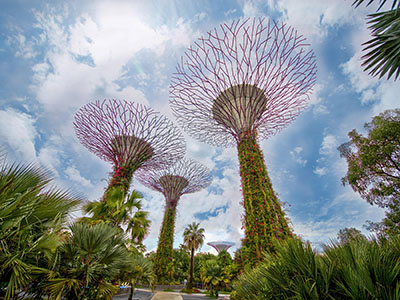
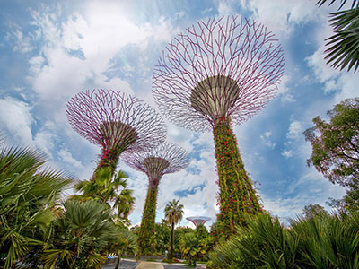

Kulturel smeltedigel
Singapore et en land med en vild kontrast. Det er ret nyt land, men har
alligevel noget af den ældste historie og kultur bragt med dem, som har valgt at
bo her. Det er bl.a. folk fra Kina, Indien, Malaysia, Indonesien + andre,
som har slået sig ned her, og har bidrager til landet med deres historie,
kultur og traditioner.
Regeringen styrer samfundet, og der er en stærk asiatisk (specielt kinesisk),
kerne i hvordan samfundet organiseres(opereres. Og beboerne er helt okay med
det, fordi de lokale (og efter kort tid også de besøgende) ved, hvor godt stedet
fungerer. Derfor ser og fornemmer du også en stærk national følelse, som skal
vise en forening af disse mange kulturer.
Denne ø er multietnisk med en rig immigrant-fortid og -nutid. Shopping og
finans har gjort det til det magtfulde samlingspunkt som det er i dag,
men glem ikke maden. Det at spise, kan være en kunstform, og det er også det du
oplever her i Singapore, hvor du både finde Michelin-stjerne reatausranter klods
op af hawkercentre.
 
